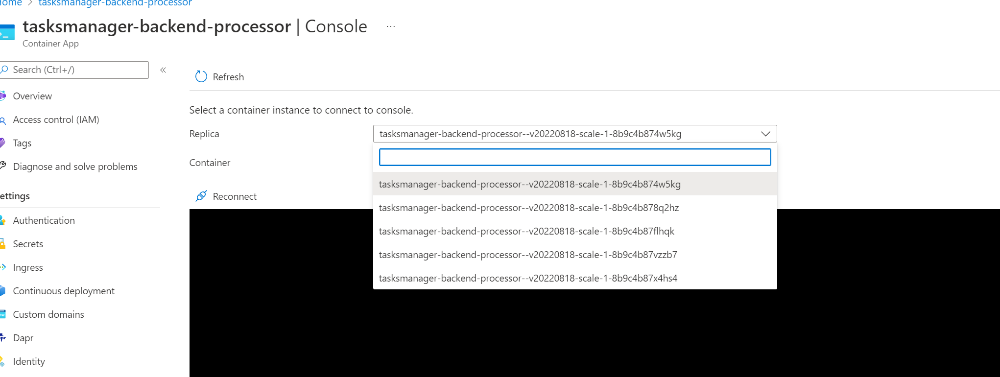

Module 9 - ACA Auto Scaling with KEDA¶
Module Duration
30 minutes
Objective¶
In this module, we will accomplish four objectives:
- Understand Azure Container Apps Scaling Behaviors.
- Learn about the Kubernetes Event-Driven Autoscaler (KEDA).
- Create a scaling rule for the Backend Background Processor project.
- Test scaling of the Backend Background Processor.
Module Sections¶
-
From the VS Code Terminal tab, open developer command prompt or PowerShell terminal in the project folder
TasksTracker.ContainerApps(root): -
Restore the previously-stored variables by executing the local script. The output informs you how many variables have been set.
1. Azure Container Apps Scaling Behaviors¶
In this module, we will explore how we can configure auto scaling rules in container apps. The Auto Scaling feature is one of the key features of any Serverless hosting platform because it empowers your application to adjust dynamically. This means your application can automatically handle higher (or lower) workloads, ensuring your system maintains its availability and performance.
Azure Container Apps support horizontal scaling, also known as scaling out and scaling in. Respectively, when demand increases, Azure Container Apps can add (scale out) replicas (new instances of the container app), thus splitting the workload across multiple replicas to process the work in parallel. Ideally, this keeps the workload per instance somewhat consistent with that instance's capacity. Conversely, when demand decreases, Azure Container Apps will remove (scale In) un- or under-utilized replicas according to your configured scaling rule. With this consumption-oriented approach, you pay only for the replicas provisioned at any time. You can also configure the scaling rule to scale to zero replicas, resulting in no costs being incurred when your Container App scales down to zero. However, be aware that scaling to zero for critical workloads is advised against.
1.1 Scaling Triggers¶
Azure Container Apps supports different scaling triggers including:
- HTTP traffic: Scaling based on the number of concurrent HTTP requests to your revision.
- CPU or Memory usage: Scaling based on the amount of CPU utilized or memory consumed by a replica.
- Azure Storage Queues: Scaling based on the number of messages in Azure Storage Queue.
- Event-driven using KEDA: Scaling based on events triggers, such as the number of messages in Azure Service Bus Topic or the number of blobs in Azure Blob Storage container.
As we covered in the introductory module, Azure Container Apps utilize different open source technologies, including KEDA, which facilitate tasks such as event-driven autoscaling. KEDA is installed by default when you provision your Container App; there is no need to worry about installing it. All we need to focus on is enabling and configuring our container app scaling rules.
2. An Overview of Kubernetes Event-Driven Autoscaler (KEDA)¶
KEDA stands for Kubernetes Event-Driven Autoscaler. It is an open-source project initially started by Microsoft and Red Hat to allow any Kubernetes workload to benefit from the event-driven architecture model. Prior to KEDA, horizontally scaling a Kubernetes deployment was achieved through the Horizontal Pod Autoscaler (HPA). The HPA relies on resource metrics such as Memory and CPU to determine when additional replicas should be deployed. In an enterprise application, there may be additional external metrics that we want to use to scale our application, such as the length of a Kafka topic log, an Azure Service Bus Queue, or metrics obtained from a Prometheus query. In short, scaling considerations are likely to be increasingly complex as your applications and ecosystem grow. KEDA offers more than 50 scalers to pick from based on your business need. KEDA exists to fill this gap and provides a framework for scaling based on events in conjunction with HPA scaling based on CPU and Memory.
3. Configure Scaling Rule in Backend Background Processor Project¶
3.1 KEDA Azure Service Bus Scaler¶
We want to configure our Backend Background Processor, tasksmanager-backend-processor, service to scale out to increase the number of replicas. We do that based on the number of messages in the Azure Service Bus Topic named tasksavedtopic. When our service is under heavy load, and a single replica is insufficient to handle the number of messages on the topic, we require the container app to create additional replicas to distribute the processing of messages on this topic.
Our requirements for scaling the backend processor are as follows:
- For every ten messages on the Azure Service Bus Topic, scale-out by one replica.
- When there are no messages on the topic, scale-in to a single replica.
- The maximum number of replicas should not exceed five.
To achieve this, we look to the KEDA Azure Service Bus scaler. This specification describes the azure-servicebus trigger for Azure Service Bus Queue or Topic. Let's take a look at the yaml file below which contains a generic template for the KEDA specification:
triggers:
- type: azure-servicebus
metadata:
# Required: queueName OR topicName and subscriptionName
queueName: queueName
# or
topicName: topicName
subscriptionName: subscriptionName
# Optional, required when pod identity is used
namespace: service-bus-namespace
# Optional, can use TriggerAuthentication as well
connectionFromEnv: SERVICEBUS_CONNECTIONSTRING_ENV_NAME # This must be a connection string for a queue itself, and not a namespace level (e.g. RootAccessPolicy) connection string
# Optional
messageCount: "5" # Optional. Count of messages to trigger scaling on. Default: 5 messages
cloud: Private # Optional. Default: AzurePublicCloud
endpointSuffix: servicebus.airgap.example # Required when cloud=Private
Curious to learn more about the contents of the yaml file?
- The property
typeis set toazure-servicebus. Each KEDA scaler specification file has a unique type. - One of the properties
queueNameortopicNameshould be provided. In our case, it will betopicNameand we will use the valuetasksavedtopic. - The property
subscriptionNamewill be set to usetasksmanager-backend-processor. This represents the subscription associated with the topic. Not needed if we are using queues. - The property
connectionFromEnvwill be set to reference a secret stored in our Container App. We will not use the Azure Service Bus shared access policy (connection string) directly. The shared access policy will be stored in the Container App secrets, and the secret will be referenced here. Please note that the Service Bus Shared Access Policy needs to be of typeManage. It is required for KEDA to be able to get metrics from Service Bus and read the length of messages in the queue or topic. - The property
messageCountis used to decide when scaling out should be triggered. In our case, it will be set to10. - The property
cloudrepresents the name of the cloud environment that the service bus belongs to.
Note
Note about authentication: KEDA scaler for Azure Service Bus supports different authentication mechanisms such as Pod Managed Identity, Azure AD Workload Identity, and shared access policy (connection string). At the time of writing this workshop, when using KEDA with Azure Container Apps the only supported authentication mechanism is Connection Strings. There is a work item in the ACA product backlog that involves enabling KEDA Scale with Managed Identity.
Azure Container Apps has its own proprietary schema to map a KEDA Scaler template to its own when defining a custom scale rule. You can define this scaling rule via Container Apps ARM templates, yaml manifest, Azure CLI, or from the Azure portal. In this module, we will cover how to do it from the Azure CLI.
3.2 Create a New Secret In The Container App¶
Let's now create a secret named svcbus-connstring in our tasksmanager-backend-processor Container App. This secret will contain the value of Azure Service Bus shared access policy (connection string) with Manage policy. To accomplish this, run the following commands in the Azure CLI to get the connection string, and then add this secret using the second command:
# List Service Bus Access Policy RootManageSharedAccessKey
$SERVICE_BUS_CONNECTION_STRING = az servicebus namespace authorization-rule keys list `
--name RootManageSharedAccessKey `
--resource-group $RESOURCE_GROUP `
--namespace-name $SERVICE_BUS_NAMESPACE_NAME `
--query primaryConnectionString `
--output tsv
# Create a new secret named 'svcbus-connstring' in backend processer container app
az containerapp secret set `
--name $BACKEND_SERVICE_NAME `
--resource-group $RESOURCE_GROUP `
--secrets "svcbus-connstring=$SERVICE_BUS_CONNECTION_STRING"
2. Create a Custom Scaling Rule from Azure CLI¶
Now we are ready to add a new custom scaling rule to match the business requirements. To accomplish this, we need to run the Azure CLI command below:
Note
You might need to upgrade the extension if you are on an older version of az containerapp which didn't allow you to create a scaling rule from CLI. To update the extension you can run the following command az extension update --name containerapp inside your PowerShell terminal.
az containerapp update `
--name $BACKEND_SERVICE_NAME `
--resource-group $RESOURCE_GROUP `
--min-replicas 1 `
--max-replicas 5 `
--revision-suffix v$TODAY-6 `
--scale-rule-name "topic-msgs-length" `
--scale-rule-type "azure-servicebus" `
--scale-rule-auth "connection=svcbus-connstring" `
--scale-rule-metadata "topicName=$SERVICE_BUS_TOPIC_NAME" `
"subscriptionName=$SERVICE_BUS_TOPIC_SUBSCRIPTION" `
"namespace=$SERVICE_BUS_NAMESPACE_NAME" `
"messageCount=10" `
"connectionFromEnv=svcbus-connstring"
Curious to learn more about the different parameters passed to the az containerapp update command?
- Setting the minimum number of replicas to
1. This means that this Container App could be scaled-in to a single replica if there are no new messages on the topic. - Setting the maximum number of replicas to
5. This means that this Container App will not exceed more than 5 replicas regardless of the number of messages on the topic. - Setting a friendly name for the scale rule
topic-msgs-lengthwhich will be visible in the Azure portal. - Setting the scale rule type to
azure-servicebus. This is important to tell KEDA which type of scalers our Container App is configuring. - Setting the authentication mechanism to type
connectionand indicating which secret reference will be used. In our casesvcbus-connstring. - Setting the
metadatadictionary of the scale rule. Those match the metadata properties in KEDA template we discussed earlier. - Disabled the integration with SendGrid as we are going to send several messages to test the scale out rule.
Note
Note About Setting Minimum Replicas To 0:
* We can set the minimum number of replicas to zero to avoid any charges when the backend processor is not processing any message from Azure Service Bus Topic, but this will impact running the other features within this backend processor such as the periodic cron job as well as the external input bidding and output bindings. We are configuring the minimum number of replicas to one, ensuring that a backend processor instance is always running and capable of handling tasks, even if there are no messages being received by the Azure Service Bus Topic.
- When the single replica of the backend processor is not doing anything, it will be running in an
idle mode. When the replica is in idle mode usage is charged at a reduced idle rate. A replica enters an active mode and is charged at the active rate when it is starting up, and when it is processing requests. For more details about the ACA pricing visit this link.
4. Scaling Testing¶
4.1 Run an End-to-End Test and Generate Several Messages¶
Now we are ready to test out our Azure Service Bus Scaling Rule. To produce a high volume of messages, you can utilize the Service Bus Explorer located within your Azure Service Bus namespace. Navigate to Azure Service Bus, choose your topic/subscription, and then select the Service Bus Explorer option.
To get the number of current replicas of service tasksmanager-backend-processor we could run the command below, this should run single replica as we didn't load the service bus topic yet.
az containerapp replica list `
--name $BACKEND_SERVICE_NAME `
--resource-group $RESOURCE_GROUP `
--query [].name
The message structure our backend processor expects is similar to the JSON shown below. So copy this message and click on Send messages button, paste the message content, set the content type to application/json, check the Repeat Send check box, select 10000 messages and put an interval of 1ms between them. This ensures that we are sending high volume at short intervals, so that the single replica container app cannot absorb and process quickly enough and will consequently need to scale out. Finally click Send when you are ready.
{
"data": {
"isCompleted": false,
"isOverDue": true,
"taskAssignedTo": "temp@mail.com",
"taskCreatedBy": "someone@mail.com",
"taskCreatedOn": "2022-08-18T12:45:22.0984036Z",
"taskDueDate": "2023-02-24T12:45:22.0983978Z",
"taskId": "6a051aeb-f567-40dd-a434-39927f2b93c5",
"taskName": "Auto scale Task"
}
}
{kind=link}
4.2 Verify that Multiple Replicas Are Created¶
Success
If all is setup correctly, five replicas will be created based on the number of messages we generated into the topic. There are various ways to verify this:
- You can run the Azure CLI command used in previous step to list the names of replicas.
- You can verify this from Container Apps
Consoletab where you will see those replicas in the drop-down list 
{kind=link}
Note
Note About KEDA Scale In: Container Apps implements the KEDA ScaledObject with the following default settings:
- pollingInterval: 30 seconds. This is the interval to check each trigger on. By default, KEDA will check each trigger source on every ScaledObject every 30 seconds.
- cooldownPeriod: 300 seconds. The period to wait after the last trigger is reported active before scaling in the resource back to 0. By default, it's 5 minutes (300 seconds). Currently, there is no way to override this value, yet there is an open issue on the Container Apps repo and the PG is tracking it as 5 minutes might be a long period to wait for instances to be scaled in after they finish processing messages.
-
Execute the
Set-Variables.ps1in the root to update thevariables.ps1file with all current variables. The output of the script will inform you how many variables are written out. -
From the root, persist a list of all current variables.
Review¶
In this module, we accomplished four objectives:
- Understood Azure Container Apps Scaling Behaviors.
- Learned about the Kubernetes Event-Driven Autoscaler (KEDA).
- Created a scaling rule for the Backend Background Processor project.
- Tested scaling of the Backend Background Processor.